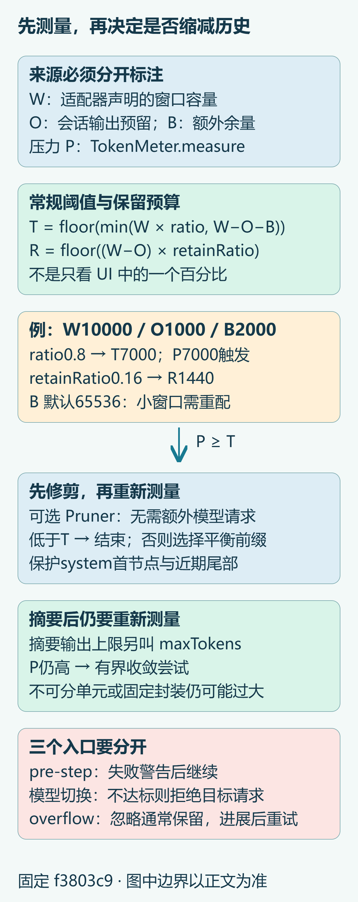
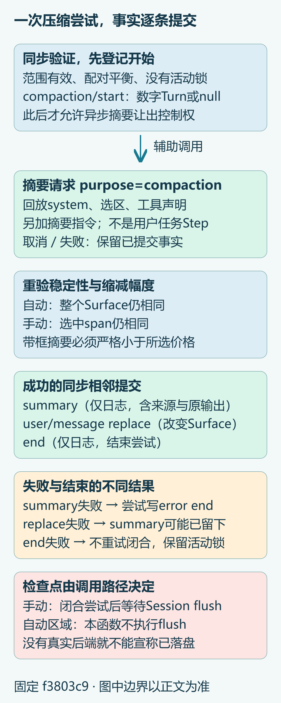
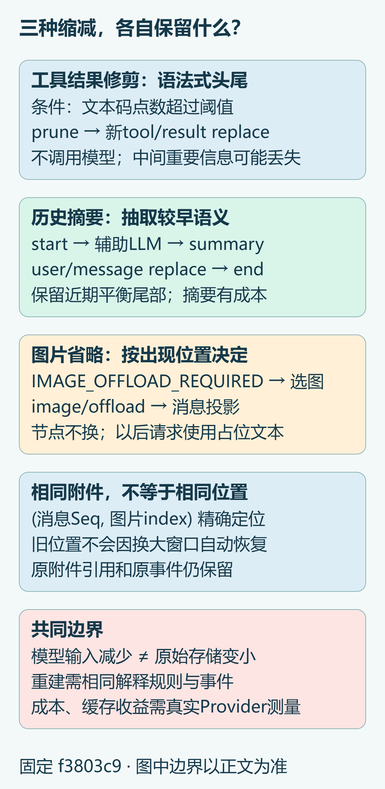
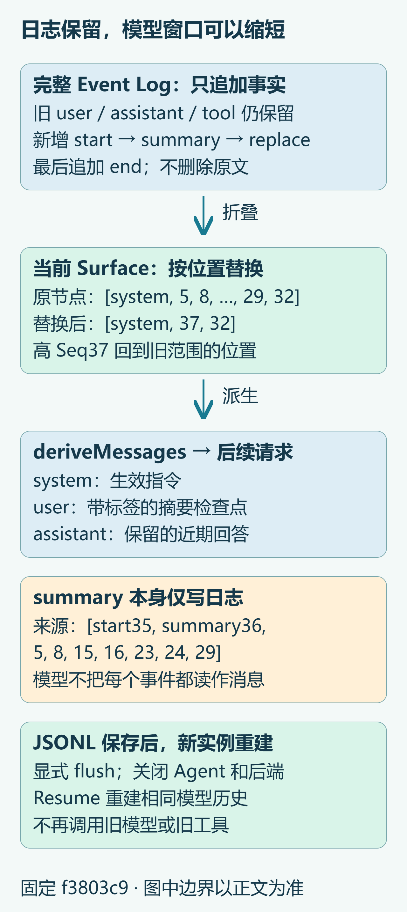

H19 作者审阅页 · 未发布。实际 LessonMarkdown 的静态渲染，折叠答案可展开；课程版本的复制交互已另经 React 挂载测试。图片在本页映射为相邻文件，不改变教材的 /course-media 路径。
Context Compaction：长对话如何控制 Token 预算？
260～350 分钟（分三段：计量与决策80～110、范围与事务85～115、缩减机制与综合95～125；作者估算，环境另计，待试读）
历史保存下来了，模型为什么仍然装不下？
代码研究 Agent 已经能够保存昨天的任务。今天继续读文件、运行受控测试、解释错误、修改方案，再检查一次。每次 Turn 会增加用户请求，Step 可能增加 Assistant 的工具提议和长工具结果。系统指令、工具 Schema、文件句柄和图片也要占据请求容量。H18解决了历史怎样延续，却没有让模型的窗口随日志一起变大。
假设工具刚返回六千字符测试输出，模型还需要看最初的约束与最近的修改。最直接的办法是发送全部历史，但模型窗口有限；简单丢掉旧消息又可能丢失需求，甚至切断工具调用与结果。这里需要做一个明确选择：原始事实继续保存，后续模型只读当前有用的历史表示。
H17已经提供这项能力的基础：Event Log记录事实，Surface选择当前消息来源，deriveMessages派生模型历史。Compaction在这些规则上追加一个新的取舍决定。它缩短模型输入，不修改模型容量，也不把全部事实变成无损的“永久记忆”。本课最终要交出一条可核对的“测量→修剪→摘要→保存→恢复→继续请求”轨迹。
我们继续固定官方Commit f3803c96974ad4a94195fb97e5c637e9c2a3afe3。下文S编号链接指向该版本的具体实现。正文中的数字来自随课真实组件实验；模型回答由Mock Adapter控制，不接付费模型。完整Harness应用、真实成本、缓存收益与学习效果均未验证。
先把五种数字分开
Context Window是一次调用可以容纳的容量约束，好比书桌能铺开的材料总量。完整Session日志是资料档案，可以持续增长；书桌上只铺当前请求要用的材料。这个比喻只解释容量与历史的区别，具体预算仍须由适配器声明和源码计算。
| 名称 | 它回答什么 | 本课的边界 |
|---|---|---|
| Context Window，W | 该路由声明多大窗口？ | 来自精确provider/model的适配器，不是日志长度 |
| Input Tokens | 本次请求未缓存输入用了多少？ | 公共Usage词汇；缓存读写另外记录 |
| Output Tokens | 本次生成用了多少？ | 包含提供方计入其中的reasoning，不再重复相加 |
| Cache Read / Write | 提供方报告多少缓存流量？ | 不能将不同提供方账单规则直接混用 |
| Max Tokens，O | 会话请求为生成预留多少容量？ | 请求配置优先，否则适配器默认，再否则零 |
| Headroom，B | 输出预留之外再留多少安全余量？ | 压缩策略参数，不是实际消耗 |
| Token Measurement | 当前日志与请求封装下估计多大压力？ | 可复用Usage锚点，也可能完全启发式 |
| Context Pressure Projection | UI可以展示什么参考？ | 最近提示词用量与预测；不是全部压缩决策 |
| 计费金额 | 提供方按什么单价收多少钱？ | 需要真实规则和独立账单，本课不测 |
Token是模型使用的计量单位，不等于汉字、英文单词或JavaScript字符。固定版本没有通用精确分词器。启发式常用“每Token四个UTF-16代码单元”，加内容块和角色开销；中文、JSON、emoji在真实分词下的密度都可能不同。不要把四字符规则写成模型的语言学事实。依据S03 · estimateContent。
Usage描述已经发生的一次调用；下一次请求还没发生，只能依据保留历史、配置和已知价格预测。容量也不是用量：窗口十万不代表这次用了十万。H12的Usage缺失应保留为不可用，不能为完成图表填零；压缩释放的估算Token也不能直接乘一个虚构单价宣布省钱。
TokenMeter：给当前请求定价，而非数所有事件
ctx.tokenMeter提供measure(session, requestHeader?)和estimateMessage(message)。前者先把计量折叠同步到当前日志，再返回同一revision的不可变快照；后者只做单条消息的固定启发式估价。它不调用模型、不执行压缩，也没有可配置的“上下文窗口”字段。容量在LLM适配器，策略在Compaction后端。依据S01 · measure、S02 · TokenMeasurement/TokenSurfaceNode。
测量的nodes按当前Surface位置排列，每项有事件seq、当前路由价格tokens、固定启发式heuristicTokens。surfaceTokens等于nodes的tokens之和。totalTokens则是压力结果：有合适的Usage基线时，从基线加上带符号的Surface变化；没有时估算当前请求封装和Surface。baseline说明使用none、estimated还是usage；surfaceDeltaTokens说明相对锚点的增减。它们并不是五个同义的“Token总数”。
为什么不直接扫描所有user文本？因为被摘要遮蔽的旧消息还在日志，却不再进入当前请求；system和工具Schema也有成本，tool/result的role开销同样存在。文件按模型能读到的句柄说明计价，不按附件文件字节数计价。相同日志在不同图片路由下，还可能有不同的视觉价格。依据S04 · estimateSystemMessage/estimateToolsTokens、S08 · priceSurface。
先手算实践A的最小输入：system文本abcd，user文本abcd。本版本system估价为ceil(4/4)+4=5；user文本块为ceil(4/4)+4，再加role4，得到9。总量14。新增一条16字符user，增加ceil(16/4)+4+4=12。加入本实践的read Schema，JSON字符串72个代码单元，工具封装ceil(72/4)+4=22，因此三个消息节点的总压力为48。这里每个数都有固定计算规则，不是精确Provider分词。
const measurement = ctx.tokenMeter.measure(session)
console.log(measurement.baseline, measurement.totalTokens)
console.log(measurement.nodes.map(n => [n.seq, n.tokens, n.heuristicTokens]))这是接入已有服务的短片段，完整装配在实践A。requestHeader覆盖参数只选择此次测量的封装与计价路由，不会替Session换消息。测量快照也不会在以后append时悄悄长出新节点；返回值深冻结，学生应保存前后两份再比较。
什么时候能相信Usage锚点？
一次成功Assistant消息有Usage，并不意味着它在任意请求下都可复用。Meter需要匹配步骤与持久请求头，还从内嵌Assistant Stream重建该次输出价格。规范header必须完整相等：仅provider/model相同还不够，工具和temperature等配置变化也会让它回退估算。Usage还必须不小于完整路由锚点的估价，否则不能作为该请求的可靠基线。依据S05 · usageTokens/optionalHeaderEquals、S06 · measure usage branch、S07 · advanceMeasurement。
实践A构造一致的紧凑流，报告input1000、cacheRead100、cacheWrite20、output50，其中reasoning10已在output内。压力锚点为1170，不是1180；成功输出原样持久时delta为0。再增加abcd用户消息，得到1179。随后只改temperature，baseline变estimated；另一个只有2Token但封装明显更大的Usage样本也不复用。
UI的contextPressure在该样本只给pressureTokens1120：它是提示词侧input加cache，不含output50。它的contextWindow来自独立的最新request/context，可能在另一时刻更新。contextBreakdown给本实践system5、tools22、messages39，是固定启发式构成，不能把66冒充1179的分项账单。压缩实际读取measure，不读取UI上一个四舍五入的百分比。依据S09 · pressureFrom/usageOf、S10 · contextBreakdownProjectionDefinition。
相同图片，为什么换路由后压力变了？
实践A让Mock适配器声明每图片视觉价格：小路由100，大路由2000，加同一个模型可见句柄文本。真实Meter测得单节点111与2011，差1900；两者heuristicTokens相同。省略该图片后，大路由变12，而固定引用启发式不因offloaded元数据改变。这是受控价格声明下的路由机制测试，不是任何真实视觉模型的报价。
文件实验把附件引用投影为官方fileHandleText，再用真实Meter对照。文件有12345字节，不代表12345Token；实际路径或明确无路径说明才是模型请求文本的一部分。路由价格依赖本次执行世界的可见表示；历史恢复一致性需要相同解释规则与能力，不能承诺任意换环境后价格永久相等。
谁测量，谁压缩，谁发命令？
TokenMeter像测量仪，CompactionEngine像操作契约，BasicCompactionEngine提供随附策略与摘要实现。dsh-compaction的抽象类定义compactIfNeeded、compactNow、compactRegion；单独挂载抽象能力不会自动产生摘要。command-compact负责面向人的显式入口，ToolResultPruner负责无需模型的头尾修剪。AgentLoop提供生命周期扩展点，职责并不全塞在Loop内部。依据S11 · CompactionEngine、S12 · CompactionTrigger。
- name: '@deepseek-ai/dsh-token-meter'
- name: '@deepseek-ai/dsh-compaction-tool-result-pruner'
- name: '@deepseek-ai/dsh-compaction-basic'
- name: '@deepseek-ai/dsh-command-compact'这是已有Session、Projection、LLM、Agent与Commands服务中的组合片段，不是一份独立可启动的全应用配置。本课的完整fixture把这些依赖逐项装好。选择不同后端可以改变策略和摘要方法，但仍需履行Surface边界、来源、取消与标记契约，不能直接改原日志数组。
触发线：窗口的80%只是一个上限
固定实现先解析精确provider/model策略，再计算：messageBudget=W−O；pressureBudget=W−O−B；触发阈值T=floor(min(W×thresholdRatio, pressureBudget))。比例保留量R=floor((W−O)×retainRatio)，显式retainTokens则替代比例。messageBudget与pressureBudget必须正，R必须小于T。当前压力P达到T就合格，P<T才直接返回。依据S13 · resolveConfig、S14 · resolveTargetPolicy、S15 · resolveCompactSpec。
例：W10000、O1000、B2000、ratio0.8，T=min(8000,7000)=7000。P6999不触发，P7000触发。retainRatio0.16得到R1440，分母是9000，并非扣完headroom的7000。它表示近期尾部的预算目标，实际不可分消息会使保留量跨过目标。
默认B65536不适合小窗口；W1000、O128时pressureBudget已为负。此时不是“历史短所以一定安全”，而是目标策略配置错误。modelPolicies用精确provider/model覆盖，可以为小模型另配headroom。retainRatio与retainTokens互斥，摘要provider/model要成对设置；未知配置不会被默默忽略。
还有两个容易同名的maxTokens。请求header中的maxTokens参与O；Basic策略的maxTokens限制辅助摘要输出，默认跟随headroom。B设0时必须另给正的摘要maxTokens。把这两个上限混在一起，会让压缩阈值和摘要成本都算错。实践D的会话O128与摘要上限256明确分开。依据S16 · reservedCompletionTokens。

自动压力、模型切换、已确认Overflow是三条路径
H10的一步在正式请求前经历pre-step。Basic的自动监听器在这里读取最新已记录路由，做常规压力检查。若合格，先调用可选Pruner并重测；已经低于T就不发摘要请求。仍高则保留近期平衡尾部，对较早范围摘要，再重测；最多首次加compactionRetries次收敛尝试。默认1代表最多两次，不代表无限循环。依据S17 · pre-step listener、S22 · compactPressure。
pre-step的配置、摘要或收敛错误会告警，然后继续Turn。课程不能把“自动压缩失败”一概写成“任务立即结束”，也不能据此认为后续模型一定成功：原请求仍可能超限。D的pre-step-failure使摘要抛错，得到带error的compaction/end，普通模型仍调用一次，Turn完成。没有真实Provider参与这条结论。
模型切换发生在agent/request。监听器先await后续路由选择，拿目标配置测现有历史，在目标header写入日志前要求降到目标阈值以下。摘要仍优先使用显式摘要路由，否则使用旧已记录路由；它不会为了切到小模型，先用已经装不下历史的小模型摘要。失败报告MODEL_SWITCH_COMPACTION_FAILED，旧header保留，已经落下的剪枝或早先摘要不会回滚。D的成功切换用旧large摘要、再发small请求；失败切换普通请求数为0。依据S18 · request listener。
Overflow则必须由规范错误CONTEXT_WINDOW_EXCEEDED确认，不能把任何SERVER错误当窗口问题。agent/request-error在失败Assistant attempt结算后、同Step的请求循环内运行。它绕过常规阈值与retain预算，尝试最大平衡缩减；只有Surface的replaceGeneration前进且未取消，才授权重建请求重试。默认maxOverflowRetries1限制该序列，idle或成功Assistant会重置计数。普通失败交给后续处理。依据S19 · request-error listener、S20 · agent/status listener、S21 · compactIfNeeded、S49 · step request-error。
这解释两个反例。没有可压缩范围时，即使收到了Overflow，也不能无变化重发；D:no-progress只调用模型一次。持续Overflow时，即使首轮成功缩减，第二次也不无限循环；D:overflow-limit总普通调用两次后报错。若剪枝已落下而后续摘要失败，有效替换仍可为一次重试提供进展证据；这个分支来自源码，本课未动态覆盖其全部组合。取消仍优先，不会因“已经缩短一些”而继续发送。
官方子系统说明将溢出恢复概括成失败步骤关闭后的动作，容易与实际顺序混淆。本课采用实现和D轨迹：attempt→compaction/start→summary/replace/end→重试，随后才step/end。重试不是开一个新的普通Step。完整重试与取消策略留H20。
选区：从Surface位置找平衡前缀
现在有Surface [system, user旧, assistant调用, tool结果, user新, assistant新]。不能按“最近N条事件”剪：中间还可能有request/header、tool/call等仅日志事实，它们不是模型消息节点；也不能只取assistant调用却留下tool结果，造成没有提议的结果。
selectCompactableRange验证测量nodes仍对应当前Surface，再保护位置0的system/message。从尾向前累计路由价格，达到retain预算后，把切点向前移动到工具配对平衡处。选中的较早范围是从第一个非首system节点至保留尾部之前。尾部可能超过R，因为消息与工具对不能按字符任意拆开。依据S23 · selectCompactableRange、S24 · toolPairingBalancedBefore/toolPairingBalancedAfter。
例一：[S,U,A(call),T(result)]，尾部预算只够T，候选切点原在T之前，但那里仍有待答调用。必须把A与T一起保留，最多压缩U。例二：只有[S,A(call),T(巨大结果)]，整个工具单元被保留，就没有可摘要的较早前缀。可选Pruner可以先缩小结果文本，但不能把“始终能压缩”当保证。例三：有Assistant调用尚无结果，显式范围边界落在它之后会被拒绝；缺结果不能用摘要凭空补齐。
retain0也不表示源码会随意切开最后节点：遍历先纳入尾节点再检查预算，所以仍至少保留一个节点。然而节点可能是空developer等不产普通文本的材料；不能承诺Overflow必然逐字保留最后一条用户消息。D的Overflow夹具在新增工具声明的序列下，后续可见文本只有system与检查点，这与常规R80保留近期Assistant的结果不同。
保护的是Surface首system头，不是“所有历史中的每一条system永不摘要”。历史内更新的后续system节点可能被选中；H11的Loop投影随后协调当前指令。显式compactRegion还检查端点存在、位置顺序及两边平衡，并要求开放Turn。完全关闭的会话要用compactNow，不应伪造一个普通Step来绕过状态。依据S25 · validateSurfaceRegion、S50 · planSurfaceEvent。
位置与数字再次分开。 综合实验修剪后，当前工具节点29占原26的位置；摘要选择的shadowedSeqs为[5,8,15,16,23,24,29]。shadowedRange.start=5/end=29不是说日志5～29每个事件都参与。后续新摘要37放回旧5的位置，高Seq可以出现在较小Seq之前，不能按数值重新排序Surface。
摘要是一份辅助请求，有自己的失败边界
summarizeWithLlm的输入包括选区派生消息、首system头、当前有效工具声明与toolHistory。它把专门的摘要指令放在最后，直接调用ctx.llm.stream，并设purpose='compaction'，不经过普通agent/request路由扩展点，也不制造正常用户任务Step。摘要目标为显式配置对、最新日志路由、AgentOptions对依次回退；没有完整目标会失败。依据S34 · summarizeWithLlm。
指令要求保留目标、技术要点、文件、错误修复、待办、当前工作、下一步与关键约束，旧检查点应与新信息合并。这是对模型的要求，不是代码已经证明摘要无遗漏。 实现只验证可用内容与缩减，不逐段核验八个标题，也不检查事实正确性。Mock短摘要用于行为断言，不能当作优质真实摘要样本。
流经过BlockAssembler，终态error/aborted拒绝；max-tokens即使有半截文本也拒绝，避免把截断当完整检查点。最终只收非空text；reasoning与tool-call输出不进入检查点，图片输出会以UNSUPPORTED_CONTENT拒绝。rawOutput保存完整辅助输出及llmStreamCall:true，便于解释这次调用；它不等于模型下一次会读取的summary文本。实践C:rich真实生成三种块，只保留一份text。依据S36 · finishError/summaryText。
frameSummary再加固定前导和<compacted-summary>标签，形成user检查点。带框后的消息估价必须严格小于所选路由价格；只看summaryText比原文短还不够，因为框架也占Token。非缩减、空内容、图片输出和截断都不是成功压缩。依据S29 · prepareCompaction/summarize、S35 · frameSummary。
我们的分析：摘要可能保住“修了错误”，却遗漏准确文件路径、用户限制或失败命令。重要约束需要在恢复后复核，不应把摘要当作所有原文的证据替代。前缀回放有机会利用提供方热缓存，但适配器投影、路由和缓存策略决定真实效果；辅助调用仍增加输入、输出与延迟。本课没有测真实命中率、金额或收益百分比。
标记、替换与检查点：按实际提交看事务
摘要调用会await，期间外部可能注入上下文、修改Surface，甚至取消。一次尝试必须先验证范围和锁，在让出控制权前同步追加compaction/start。自动/显式区域用当前开放Turn的数字归属；手动尝试用turn:null。长调用返回后重新验证稳定性与价格，再提交，不能拿失效摘要覆盖新的事实。依据S26 · compactSurfaceRegion、S30 · assertWholeSurfaceUnchanged、S31 · assertSelectedSpanStable。
成功时接着同步追加三条：compaction/summary记录摘要、来源、路由与用量；承载框定摘要的user/message做Surface replace；compaction/end结束尝试。summary与replace相邻，后者sourceEventSeqs列出start、summary及所有被遮蔽节点。compaction/*均为仅日志事件，没有SurfaceOp；真正改变模型历史的是user替换。 依据S32 · commitCompactionBody、S33 · SessionEventMap。

| 发生在哪里 | 已提交事实和调用结果 |
|---|---|
| start之前取消／范围错误／busy | 不为本次尝试制造一对标记 |
| 摘要失败、非缩减、取消、稳定性改变 | 原前缀保留；尝试追加带error的end |
| summary已写，replace被拒绝 | summary保留，Surface未变；end记录错误 |
| replace已写，end被拒绝 | 新Surface可能已生效，未匹配start保留；不重复闭合掩盖故障 |
| 手动闭合成功，flush失败 | 事实与Surface已经改变，报persistence，不宣称已经保存 |
“事务”在这里表示带身份的受控操作，不是所有事件一起原子提交、一起回滚的数据库事务。实践C的partial-commit与end-failed分别注入这两个提交入口故障，不是假装物理磁盘损坏。重试已失效的旧range会先因端点不存在拒绝；改用当前合法range，才能进一步观察活动锁。
锁不是一个普通内存布尔值。检查器反向查最新compaction标记和最新session/end-seed；生命周期边界之后的未匹配start是活动锁，之前的残留是陈旧证据。正常闭合释放锁，end失败故意留下busy。新的end-seed不等于原失败从日志消失，更不能靠删除start“修好”历史。依据S27 · assertCompactionInactive、S28 · inspectCompactionEntryState。
摘要出错还可进入同步compaction/summary-error waterfall。监听者只有先记录真实输入进展才返回true，后端再派生、重计价、重新校验后重试。图片省略是实际消费者。该钩子不能写成任意错误无限重试的许可证；取消时不再恢复，已经记录的省略也不回滚。依据S37 · summary-error recovery。
三种缩减：头尾、语义与图片位置
工具输出可能只是大量重复测试日志。ToolResultPruner无需额外模型，把超过thresholdChars的text块总和裁成头部、固定middle pruned标记和尾部。默认8192／4096／1024；必须严格超过阈值才剪，等于阈值不改。头、标记、尾总和不得超过阈值，保证不会反复增大。依据S40 · DEFAULTS/resolveConfig、S41 · pruneContent。
这里按Unicode码点计数，用Array.from保护emoji代理对；不是TokenMeter的UTF-16长度，也不是用户感知字素簇。跨多个text块共享全局头尾预算，中间标记只插一次；非text块不计字符预算，保持相对顺序。组合emoji或带重音字素仍可能被切断。图片与结构化内容不因为text被剪就一起消失。
pruneSession遍历当前工具结果，先追加compaction/prune记录旧节点固定启发式shadow price，再紧邻追加tool/result replace，引用原seq。消息身份、调用关联、错误与元数据保留，只有content变短。原始结果仍在日志，已提交的早先修剪也不会因后一个失败而撤回。依据S42 · pruneSession。
调用时机也属于合法性。 Basic在开放Turn内的压力或Overflow路径调用Pruner。我们发现，把Pruner直接用于已关闭Turn后，内存Session可接纳替换，但JSONL重读的生命周期校验会拒绝“tool/result is outside an open turn”。本课B在开放Turn做组件验证，X在真实下一pre-step内修剪；不教学生在关闭的持久历史上任意剪枝。这个固定版本的分层约束及失败证据另列作者差异记录。依据S54 · event state validation。
图片省略，不是图片摘要
当支持图片的路由以IMAGE_OFFLOAD_REQUIRED并带offloadImages数量拒绝请求，图片省略插件按当前输入顺序选最旧的仍保留图片，跳过Assistant输出。它追加image/offload，目标为(消息事件Seq，消息内图片index)。同一附件可在不同消息甚至同一消息中出现多次，附件ID不能唯一标识一次出现。依据S43 · imageOffloadProjection、S44 · offloadOldestImages、S45 · apply。
消息投影把选中块标成offloaded:true，节点与消息身份不换。后续适配器使用offloadedImageText占位，说明附件以及可用只读路径；没有路径时明确提示需要再次附加。原始附件引用和事件未物理删除。新的工具读取可以增加新出现位置，却不会恢复旧位置；换更大窗口模型也不自动撤销已经持久的决定。依据S46 · offloadedImageText。
请求错误恢复不消耗普通Provider重试预算，也不追加普通llm/retry事件，因为它是在修复输入。摘要失败则通过summary-error在选区内选图、记录进展，在同一标记对内重试。取消在请求错误路径委派，在摘要路径抛出取消原因，二者不能混写。补充images实验验证精确位置、占位、取消拒绝和摘要恢复；完整真实图片Adapter／Agent请求错误集成本轮未运行。

/compact：在人类命令与普通Turn之间画边界
手动命令不等达到T才做，也不消耗一次普通模型任务Turn，但摘要器仍可能发辅助LLM请求。command-compact只依赖Commands与Compaction契约，参数必须为空。Commands执行器拥有command/run与command/done；成功done的sourceEventSeq指向summary，界面可以据此归并，而不是解析一段结果文本。两类命令事件都仅日志。依据S47 · apply/executeCompact、S48 · execute。
compactNow同步调用runMaintenance预留空闲工作，阻止后来输入抢先开Turn，随后选retain0的有用范围；无范围直接null且不写标记。Agent有运行工作、另一维护或已获优先权的唤醒输入时会busy；命令本身不排队。维护时公共status仍可为idle，不能只检查status就认定可并行修改。真正互斥在内部phase与日志锁。依据S38 · compactNow、S39 · runMaintenance。
维护期间followup仍接纳并按FIFO等待，每条分别开普通Turn。inject的非唤醒上下文可以在start/end之间追加，因此手动只要求所选span连续、相同且平衡，允许范围外新增；自动区域则要求整个Surface稳定。D:manual-fifo显示第一请求含FIFO_ONE而无FIFO_TWO，第二请求才含FIFO_TWO；范围外注入保留。不能把FIFO误画成所有新输入同时进入同一个请求。
每次已闭合手动尝试都等待ctx.sessions.flush，之后才释放维护并唤醒工作。没有存储监听器时，这个调用不证明落盘；X真正挂载JSONL才构成磁盘证据。手动失败分类包含busy、cancelled、changed、summary、commit、persistence；command映射成人类结果。插件退出先注销命令，再等已经开始的处理器结束，不能越过取消后的闭合和检查点工作。
原始事实继续增长，当前模型只读有效历史
综合X的原工具结果26有约六千字符。真实开放Turn的pre-step先写28 compaction/prune，29 tool/result替换26。Turn结束后，手动压缩35 start、36 summary、37 user替换、38 end。summary.shadowedSeqs精确列[5,8,15,16,23,24,29]，其固定shadowedTokenCount为1319；原26和被遮蔽节点都在日志。

最终有效Surface为[4,37,32]，模型得到system、摘要user、近期assistant三条消息。37的sourceEventSeqs为[35,36,5,8,15,16,23,24,29]；没有把日志中间全部事件误作摘要输入。保存的原日志共39条，后端再打开和Resume时能按相同事件与解释规则重建相同消息。普通end-seed是新生命周期自己的事实，不能拿恢复后总长多一条判历史不同。依据S51 · open、S52 · resumeWith、S53 · constructor end-seed。
这种压缩使后续请求不再携带旧原文，但原始存储未变小，甚至因为记录摘要与来源而增长。Event Sourcing保留解释依据，Persistence保存这些事实，Compaction决定模型当前读什么。三者分工清楚，才能既保留可追溯性，又控制模型输入；它们都不让外部工具获得“恰好执行一次”的保证。
运行准备与验收方法
在AI Foundry仓库根运行以下命令。Node24、Python、固定官方源码和隔离依赖锚点的完整准备见lab/README及作者README。runner先核9619个固定源码／配置／文档的Git blob与SHA256，再核依赖的版本和integrity；把随课程序复制到新的临时根运行，不往业务工程安装Harness依赖。
python -X utf8 docs/deepseek-harness-v2/h19/scripts/check-sources.py
node docs/deepseek-harness-v2/h19/scripts/run-labs.mjs A
node docs/deepseek-harness-v2/h19/scripts/run-labs.mjs B
node docs/deepseek-harness-v2/h19/scripts/run-labs.mjs C
node docs/deepseek-harness-v2/h19/scripts/run-labs.mjs D
node docs/deepseek-harness-v2/h19/scripts/run-labs.mjs X每项先交预测表，再运行，再解释输出与原预测的差异。默认不带参数运行全部行为测试；实践D各分支在D_CASES，实践C在C_CASES，测试入口均逐项展开。运行器保存args、exit、stdout/stderr、程序hash与临时根。没有删除步骤，所有新产物和空目录留存登记，H18材料保持原样。
这是34个TAP项：C19、D15；其中数项含多个相关断言，不说成34类独立故障。C/D使用真实Cordis、Session、Meter及压缩组件；D加入真实Loop、Runtime和脚本Adapter。X另挂真实磁盘JSONL，属于同进程关闭后新建后端实例再Resume；没有独立进程恢复、默认Zstd与真实断电测试。不能把H18的结果自动转记为H19跨组件通过。
想深入再看：公共准备完整程序
import assert from 'node:assert/strict';
import {Context} from '@deepseek-ai/cordis';
import SessionStore,{Session,SessionId,canonicalHeader} from '@deepseek-ai/dsh-session';
import LlmRuntime,{LlmAdapter,createUserMessage,createSystemMessage,createAssistantMessage,createToolResultMessage,ToolCallId} from '@deepseek-ai/dsh-llm';
import SessionProjectionRegistry from '@deepseek-ai/dsh-session-projection';
import TokenMeter from '@deepseek-ai/dsh-token-meter';
import Basic from '@deepseek-ai/dsh-compaction-basic';
import Pruner from '@deepseek-ai/dsh-compaction-tool-result-pruner';
import * as Offload from '@deepseek-ai/dsh-compaction-image-offload';
import AgentRegistry from '@deepseek-ai/dsh-agent';
import AgentLoop from '@deepseek-ai/dsh-agent-loop';
import SystemPrompt from '@deepseek-ai/dsh-system-prompt';
import ToolsService,{defineTool} from '@deepseek-ai/dsh-tools';
import {NativeToolExecutor} from '@deepseek-ai/dsh-tool-executor-native';
import * as Jsonl from '@deepseek-ai/dsh-session-persistence-jsonl';
import {mkdtemp} from 'node:fs/promises';
import {resolve} from 'node:path';
export {assert,Session,SessionId,canonicalHeader,createAssistantMessage,createSystemMessage,createToolResultMessage,ToolCallId,Basic};
export const signal=()=>new AbortController().signal;
export const user=(text:string,content?:any[])=>createUserMessage({source:{kind:'user'},content:content??[{type:'text',text}]});
export const blocks=(text:string,finish:any={kind:'stop'})=>[{type:'text-delta',index:0,text},{type:'finish',reason:finish}];
export const textOf=(messages:any[])=>messages.flatMap(m=>m.content).filter(b=>b.type==='text').map(b=>b.text).join('\n');
export class Adapter extends LlmAdapter{
requests:any[]=[]; summaries:any[]=[]; ordinary=0;
summary='Goal: inspect fixture. Next: continue safely.';
summaryMode='ok'; failure=''; gate?:Promise<void>; onSummary?:()=>void;
async resolveModel(provider:string,model:string){return {provider,id:model,name:model,defaultMaxTokens:128,context:{contextWindow:model==='small'?2000:100000}};}
override imageRequestPricing(_provider:string,model:string){return {priceImages:(images:any[])=>images.map(image=>({visualTokens:image.offloaded?0:model==='vision-big'?2000:100,text:image.offloaded?'omitted image':'image handle'}))};}
async *stream(options:any):AsyncGenerator<any>{
const captured=structuredClone({...options,signal:undefined});this.requests.push(captured);
if(options.purpose==='compaction'){
this.summaries.push(captured);this.onSummary?.();if(this.gate)await this.gate;options.signal?.throwIfAborted();
if(this.summaryMode==='throw')throw Error('controlled summary failure');
if(this.summaryMode==='image'){yield {type:'block-start',index:0,blockType:'image'};yield {type:'block-end',index:0,block:{type:'image',attachment:imageRef()}};}
else if(this.summaryMode==='rich'){
yield {type:'block-start',index:0,blockType:'reasoning'};yield {type:'block-end',index:0,block:{type:'reasoning',text:'private thought'}};
yield {type:'block-start',index:1,blockType:'tool-call'};yield {type:'block-end',index:1,block:{type:'tool-call',id:ToolCallId('never-run'),name:'work',arguments:'{}'}};
yield {type:'text-delta',index:2,text:this.summary};
}else yield {type:'text-delta',index:0,text:this.summaryMode==='empty'?'':this.summary};
yield {type:'finish',reason:{kind:this.summaryMode==='max'?'max-tokens':'stop'}};return;
}
this.ordinary++;
if(this.failure==='always-overflow'||(this.failure==='overflow'&&this.ordinary===1)){
yield {type:'finish',reason:{kind:'error',failure:{message:'controlled context overflow',code:'CONTEXT_WINDOW_EXCEEDED'}}};return;
}
if(this.failure==='server'){yield {type:'finish',reason:{kind:'error',failure:{message:'controlled failure',code:'SERVER'}}};return;}
if(textOf([options.messages.at(-1)]).includes('RUN_TOOL')){
yield {type:'block-start',index:0,blockType:'tool-call'};
yield {type:'block-end',index:0,block:{type:'tool-call',id:ToolCallId('work-'+this.ordinary),name:'work',arguments:'{}'}};
yield {type:'finish',reason:{kind:'tool-calls'}};return;
}
yield* blocks('fixture answer');
}
}
export const imageRef=()=>({attachmentId:'sha256:'+ 'ab'.repeat(32),mediaType:'image/png',bytes:32,width:10,height:10,name:'fixture.png'});
export async function fixture(options:{loop?:boolean;disk?:boolean;auto?:boolean;policy?:any;pruner?:boolean}={}){
const ctx=new Context();await ctx.plugin(SessionStore);const facts=new Map<string,any[]>();
ctx.on('session/event',(s,e)=>{const a=facts.get(s.id)??[];a.push(e);facts.set(s.id,a);});
let root:string|undefined;
if(options.disk){assert.ok(process.env.H19_RUN_ROOT);root=await mkdtemp(resolve(process.env.H19_RUN_ROOT!,'h19-jsonl-'));await ctx.plugin(Jsonl,{root,compression:'none'});}
await ctx.plugin(LlmRuntime);await ctx.plugin(SessionProjectionRegistry);await ctx.plugin(TokenMeter);
const adapter=new Adapter();ctx.llm.registerAdapter(['fixture'],adapter);
if(options.pruner)await ctx.plugin(Pruner,{thresholdChars:200,headChars:60,tailChars:60});
await ctx.plugin(AgentRegistry);await ctx.plugin(Offload);
await ctx.plugin(Basic,{auto:options.auto??false,headroomTokens:0,maxTokens:256,retainTokens:80,...options.policy});const compact=ctx.compaction;
const errors:any[]=[];let bodies=0;
if(options.loop){
await ctx.plugin(SystemPrompt,{includeHarnessIdentity:false,personaPrefix:'Use only fixture material.'});
await ctx.plugin(ToolsService);ctx.tools.setExecutor(new NativeToolExecutor(ctx));
ctx.tools.register(defineTool({name:'work',description:'Read an in-memory fixture; no filesystem or network',parameters:{},output:{schema:{type:'string'},render:(_a,v)=>[{type:'text',text:v}]},async execute(){bodies++;return 'HEAD '+ 'tool body '.repeat(600)+' TAIL';}}));
await ctx.plugin(AgentLoop,{agents:[]});ctx.on('agent/error',e=>errors.push(String(e.error)));
}
return {ctx,adapter,compact,facts,errors,root,bodies:()=>bodies,close:()=>ctx.fiber.dispose()};
}
// Legitimate component history; fixture appends are recorded as they commit.
export function history(ctx:any,id='history',length=2400,turns=3){
const s=ctx.sessions.create(SessionId(id));
for(let t=1;t<=turns;t++){
s.append('turn/start',{turn:t});s.append('step/start',{turn:t,step:1});
if(t===1){s.append('system/message',{turn:t,step:1,message:createSystemMessage('Use fixture facts.')},{surfaceOp:'append'});s.append('request/header',{header:canonicalHeader({config:{provider:'fixture',model:'large'}}),reason:'initial'});}
s.append('user/message',user((t===1?'OLD_SENTINEL ':'RECENT_'+t+' ')+ 'x'.repeat(length)),{surfaceOp:'append'});
s.append('assistant/message',{turn:t,step:1,message:createAssistantMessage({source:{provider:'fixture',model:'large'},content:[{type:'text',text:'answer '+t+' '+ 'y'.repeat(length)}]}),stream:[]},{surfaceOp:'append'});
s.append('step/end',{turn:t,step:1});s.append('turn/end',{turn:t,reason:{kind:'completed'}});
}
return s;
}
export const componentAgent=(s:any)=>({session:s,options:{provider:'fixture',model:'large'}} as any);
export const open=(s:any)=>s.append('turn/start',{turn:4});
export function appendTool(s:any,text:string,content?:any[]){
const turn=4,step=1,id=ToolCallId('fixture-tool');open(s);s.append('step/start',{turn,step});
s.append('assistant/message',{turn,step,stream:[],message:createAssistantMessage({source:{provider:'fixture',model:'large'},content:[{type:'tool-call',id,name:'work',arguments:'{}'}]})},{surfaceOp:'append'});
const call=s.append('tool/call',{turn,step,callId:id,name:'work',arguments:'{}'});
return s.append('tool/result',{turn,step,message:createToolResultMessage({callId:id,content:content??[{type:'text',text}],isError:false})},{surfaceOp:'append',sourceEventSeqs:[call.seq]});
}想深入再看：隔离依赖完整程序
// 依赖锚点均由作者 runner 按固定上游 lock 完整核验。
import fs from 'node:fs';
import {registerHooks, createRequire, syncBuiltinESMExports} from 'node:module';
import {pathToFileURL} from 'node:url';
const dep=createRequire(pathToFileURL(process.env.H19_DEPS_ANCHOR));
const zod=createRequire(pathToFileURL(process.env.H19_ZOD_ANCHOR));
const native=createRequire(pathToFileURL(process.env.H19_NATIVE_ANCHOR));
const limit=createRequire(pathToFileURL(process.env.H19_LIMIT_ANCHOR));
const entries=new Map(['js-yaml','@eslint-community/regexpp','ajv','node-addon-require-builtin','resolve.exports','semver']
.map(name=>[name,pathToFileURL(dep.resolve(name)).href]));
entries.set('zod',pathToFileURL(zod.resolve('zod')).href);
entries.set('koffi',pathToFileURL(native.resolve('koffi')).href);
entries.set('p-limit',pathToFileURL(limit.resolve('p-limit')).href);
entries.set('@js-temporal/polyfill',pathToFileURL(limit.resolve('@js-temporal/polyfill')).href);
for(const file of ['region','config','summarizer'])entries.set('@deepseek-ai/dsh-compaction-basic/src/'+file+'.ts',pathToFileURL(process.env.HARNESS_SOURCE_CACHE+'/packages/compaction/compaction-basic/src/'+file+'.ts').href);
entries.set('@deepseek-ai/dsh-compaction-image-offload/src/image-offload.ts',pathToFileURL(process.env.HARNESS_SOURCE_CACHE+'/packages/compaction/compaction-image-offload/src/image-offload.ts').href);
registerHooks({resolve(specifier,context,next){return next(entries.get(specifier)??specifier,context);}});
// 用户禁止批量/递归删除；包括上游异常清理路径也不准执行递归 rm。
const rm=fs.promises.rm;
fs.promises.rm=async(path,options)=>{
if(options?.recursive)throw Error('H19 safety guard: recursive removal forbidden');
return rm(path,options);
};
syncBuiltinESMExports();实践 A：数字从哪里来？
输入为system四字符、user四字符、read Schema，再增加16字符用户。随后加入一致Usage流，添加新用户、改变temperature，并用声明视觉价格的适配器测同一图片。先预测total、baseline、delta和节点计数；再解释文件字节为何不是Token。另构造四字符工具结果，预测其节点成本，以及tool/call是否增加Surface节点。验收必须写出精确值与来源。
想深入再看：实践 A 完整程序
import {fixture,assert,user,createSystemMessage,createAssistantMessage,canonicalHeader,signal,imageRef,appendTool} from './support.ts';
import {AssistantStreamAccumulator,projectFilesToText} from '@deepseek-ai/dsh-llm';
export async function practiceA(){
const f=await fixture();try{
const s=f.ctx.sessions.create();const meter=f.ctx.tokenMeter;
assert.equal(meter.measure(s).baseline.kind,'none');assert.equal(meter.measure(s).totalTokens,0);
s.append('system/message',{turn:1,step:1,message:createSystemMessage('abcd')},{surfaceOp:'append'});
const old=s.append('user/message',user('abcd'),{surfaceOp:'append'});
assert.equal(meter.measure(s).totalTokens,14); // system 5 + user 9
const tools=[{name:'read',description:'read',parameters:{type:'object' as const}}];
const h=canonicalHeader({config:{provider:'fixture',model:'large'},tools});
s.append('request/header',{header:h,reason:'initial'});
const schemaPrice=Math.ceil(JSON.stringify(tools).length/4)+4;
assert.equal(meter.measure(s).totalTokens,14+schemaPrice);
s.append('user/message',user('q'.repeat(16)),{surfaceOp:'append'});
const before=meter.measure(s);assert.equal(before.totalTokens,26+schemaPrice);
s.append('user/message',user('z'),{surfaceOp:{op:'replace',startSeq:old.seq,endSeq:old.seq},sourceEventSeqs:[old.seq]});
assert.equal(meter.measure(s).nodes.length,3);assert.equal(before.nodes.length,3);assert.ok(Object.isFrozen(before.nodes));
// Successful request anchor uses the actual embedded compact stream, not an empty invented stream.
s.append('turn/start',{turn:1});s.append('step/start',{turn:1,step:1});
const acc=new AssistantStreamAccumulator();const usage={inputTokens:1000,outputTokens:50,cacheReadTokens:100,cacheWriteTokens:20,reasoningTokens:10};
const chunks:any[]=[{type:'text-delta',index:0,text:'done'},{type:'usage',usage},{type:'finish',reason:{kind:'stop'}}];
chunks.forEach((chunk,time)=>acc.push({time,chunk}));
s.append('assistant/message',{turn:1,step:1,message:createAssistantMessage({source:{provider:'fixture',model:'large'},content:[{type:'text',text:'done'}]}),stream:[...acc.snapshot()],usage},{surfaceOp:'append'});
s.append('step/end',{turn:1,step:1});s.append('turn/end',{turn:1,reason:{kind:'completed'}});
const anchored=meter.measure(s);assert.equal(anchored.baseline.kind,'usage');assert.equal(anchored.totalTokens,1170);assert.equal(anchored.surfaceDeltaTokens,0);
s.append('user/message',user('abcd'),{surfaceOp:'append'});assert.equal(meter.measure(s).totalTokens,1179);
const changed=meter.measure(s,canonicalHeader({...h,config:{...h.config,temperature:0.5}}));assert.equal(changed.baseline.kind,'estimated');
const tiny=f.ctx.sessions.create();tiny.append('step/start',{turn:1,step:1});tiny.append('request/header',{header:h,reason:'initial'});
tiny.append('assistant/message',{turn:1,step:1,message:createAssistantMessage({source:{provider:'fixture',model:'large'},content:[{type:'text',text:'answer'}]}),stream:[],usage:{inputTokens:1,outputTokens:1}},{surfaceOp:'append'});
assert.equal(meter.measure(tiny).baseline.kind,'estimated');
const images=f.ctx.sessions.create();const img=images.append('user/message',user('',[{type:'image',attachment:imageRef()}]),{surfaceOp:'append'});
const price=(model:string)=>meter.measure(images,canonicalHeader({config:{provider:'fixture',model}}));
const small=price('vision-small'),large=price('vision-big');assert.equal(large.surfaceTokens-small.surfaceTokens,1900);assert.equal(large.nodes[0].heuristicTokens,small.nodes[0].heuristicTokens);
images.append('image/offload',{targets:[{seq:img.seq,imageIndexes:[0]}]});const omitted=price('vision-big');assert.ok(omitted.surfaceTokens<large.surfaceTokens);assert.equal(omitted.nodes[0].heuristicTokens,large.nodes[0].heuristicTokens);
const files=f.ctx.sessions.create(),ref:any={attachmentId:'sha256:'+'cd'.repeat(32),name:'fixture.txt',bytes:12345};const file=user('',[{type:'file',attachment:ref}]);files.append('user/message',file,{surfaceOp:'append'});
assert.equal(meter.measure(files).surfaceTokens,meter.estimateMessage(projectFilesToText([file],()=>undefined)[0]));
const toolSession=f.ctx.sessions.create(),tool=appendTool(toolSession,'abcd'),toolMeasurement=meter.measure(toolSession);
assert.equal(toolMeasurement.nodes.find(n=>n.seq===tool.seq)!.tokens,9);assert.equal(toolMeasurement.nodes.length,2); // assistant proposal + tool result; tool/call is log-only
return {numeric:{system:5,user:9,schemaPrice,before:before.totalTokens},anchored,afterUser:1179,changed,images:{small,large,omitted},contextPressure:meter.contextPressure(s),breakdown:f.ctx.sessionProjections.snapshot(s).values.contextBreakdown,toolResult:{measurement:toolMeasurement,events:f.facts.get(toolSession.id)},events:f.facts.get(s.id)};
}finally{await f.close();}
}想深入再看：实践 A 详细参考答案
无消息无头时total0、baseline none；system5+user9=14。read工具声明JSON长度72，工具价22；再加16字符用户12，得到48。单点替换不增加节点数，旧事件仍在日志；保存的测量对象深冻结，不随以后追加改变。独立工具夹具的abcd结果同样为9：文本块5加role4；Surface两节点是Assistant提议与结果，tool/call仅日志。
成功流的Usage锚点=1000+100+20+50=1170，reasoning10不再加；本次输出未改，delta0。新abcd用户增加9，变1179。改temperature会令完整头不等，回退estimated；小于完整锚点的Usage也不复用。UI提示词压力1120与测量1179并不矛盾，前者不含output且不是同一“当前总量”。构成5/22/39属于启发式，不能拼成Provider账单。
图片111→2011来自视觉价100→2000的受控声明，差1900；offload后12来自占位文本；heuristicTokens始终按固定引用规则。文件按官方句柄文本投影计价。建议10分：数值推导4，基线与封装3，路由/展示/账单边界3。把1179写成精确费用的关键误解需先订正；评分未经试读校准。
实践 B：保住头尾，是否保住了意思？
输入100个😀、一张图片、150个“尾”。预算threshold200、head60、tail60。先预测码点数、标记位置与图片顺序，再把它作为真实工具结果提交，运行Pruner，比较Event Log与Surface。恰好200字符的对照应不修剪。
想深入再看：实践 B 完整程序
import {fixture,history,appendTool,assert,imageRef,textOf} from './support.ts';
import {PRUNE_MARKER} from '@deepseek-ai/dsh-compaction-tool-result-pruner';
export async function practiceB(){
const f=await fixture({pruner:true});try{
const p=f.ctx.toolResultPruner;assert.equal(p.pruneContent([{type:'text',text:'a'.repeat(200)}]),null);
const content:any[]=[{type:'text',text:'😀'.repeat(100)},{type:'image',attachment:imageRef()},{type:'text',text:'尾'.repeat(150)}];
const pruned=p.pruneContent(content)!;assert.equal(p.measureContent(content),250);assert.equal(p.measureContent(pruned),120+Array.from(PRUNE_MARKER).length);
assert.equal(pruned[0].type,'text');assert.ok((pruned[0] as any).text.startsWith('😀'.repeat(60)));
assert.deepEqual(pruned.filter(b=>b.type!=='text'),[content[1]]);assert.ok(textOf([{content:pruned}]).endsWith('尾'.repeat(60)));
const s=history(f.ctx,'pruner',20),original=appendTool(s,'',content),prior=[...f.facts.get(s.id)!];const before=f.ctx.tokenMeter.measure(s);
const result=p.pruneSession(s),events=f.facts.get(s.id)!;assert.equal(result.pruned.length,1);assert.deepEqual(events.slice(0,prior.length),prior);
assert.deepEqual(events.slice(-2).map(e=>e.type),['compaction/prune','tool/result']);const replacement=events.at(-1)!;
assert.deepEqual(replacement.sourceEventSeqs,[original.seq]);assert.equal(replacement.data.message.id,original.data.message.id);
assert.ok(!s.surface.nodes.includes(original.seq));assert.ok(s.surface.nodes.includes(replacement.seq));assert.deepEqual(original.data.message.content,content);
assert.equal(p.pruneSession(s).pruned.length,0);assert.ok(f.ctx.tokenMeter.measure(s).totalTokens<before.totalTokens);
return {original,pruned,result,before,after:f.ctx.tokenMeter.measure(s),surface:s.surface.nodes,events};
}finally{await f.close();}
}想深入再看：实践 B 详细参考答案
原文本250码点，emoji在JavaScript长度中占200代码单元，在Pruner中仍是100码点。输出为60个😀、一份固定标记、60个“尾”；非文本图片仍在相同相对位置。标记自身39码点，所以输出159码点，小于200；等于200的输入返回null，二次扫描不重复修剪。
Session新增compaction/prune与tool/result replace，相邻且来源引用旧工具seq；旧事件完整相等，新消息id和调用关联保留。旧节点退出Surface，新节点占原位置，后续派生读短结果。这个实验保持Turn开放，不能拿内存通过推成关闭Turn后的任意持久修剪。建议10分：码点与边界3，富块与文本3，事件/Surface/时机4。原文保留不等于模型没有信息损失，中间独有报错仍可能不见。
实践 C：给每个结果写完整事件尾部
输入三个已闭合Turn与一个开放Turn，选择真实Meter计算的平衡前缀。先预测success、noop、unbalanced、below四类是否写标记；再对failure、nonshrinking、max、image、rich、cancel、active、changed、partial-commit、end-failed、stale、policy逐项推演。C名称是实践编号，不是每个分支都做磁盘测试。
想深入再看：实践 C 完整程序
import {fixture,history,componentAgent,open,appendTool,assert,user,signal,Basic} from './support.ts';
import {CompactionId,toolPairingBalancedBefore} from '@deepseek-ai/dsh-compaction';
import {selectCompactableRange} from '@deepseek-ai/dsh-compaction-basic/src/region.ts';
import {resolveConfig,resolveTargetPolicy,resolveCompactSpec} from '@deepseek-ai/dsh-compaction-basic/src/config.ts';
export const C_CASES=['success','noop','unbalanced','below','failure','nonshrinking','max','image','rich','cancel','active','changed','partial-commit','end-failed','stale','policy'];
export async function practiceC(kind='success'){
const f=await fixture();try{
const s=history(f.ctx,'C-'+kind),a=componentAgent(s);open(s);const log=f.facts.get(s.id)!;const before=[...log],nodes=[...s.surface.nodes];
const range=selectCompactableRange(s,f.ctx.tokenMeter.measure(s),80)!;assert.ok(range);
const run=()=>f.compact.compactRegion(range.start,range.end,a,signal());
if(kind==='policy'){
const config=resolveConfig({headroomTokens:2000,maxTokens:512,retainRatio:0.16});const policy=resolveTargetPolicy(config,{provider:'fixture',model:'large'});
const spec=resolveCompactSpec(policy,10000,1000);assert.equal(spec.thresholdTokens,7000);assert.equal(spec.retainTokens,1440);
assert.throws(()=>resolveCompactSpec(resolveTargetPolicy(resolveConfig(),{provider:'fixture',model:'small'}),1000,128));
assert.throws(()=>resolveConfig({retainRatio:0.2,retainTokens:10}));return {threshold:7000,retain:1440};
}
if(kind==='noop'){const single=f.ctx.sessions.create();single.append('user/message',user('x'.repeat(3000)),{surfaceOp:'append'});assert.equal(selectCompactableRange(single,f.ctx.tokenMeter.measure(single),0),null);return {noWrite:true};}
if(kind==='below'){assert.equal(await f.compact.compactIfNeeded(a,'pressure',signal()),null);assert.equal(log.length,before.length);return {noWrite:true};}
if(kind==='unbalanced'){
// Finish previous open turn, then a tool unit; cutting before its result is unsafe.
s.append('turn/end',{turn:4,reason:{kind:'completed'}});const t=appendTool(s,'result');assert.equal(toolPairingBalancedBefore(s,t.seq),false);
await assert.rejects(f.compact.compactRegion(t.seq,t.seq,a),/balanced/);return {rejectedBeforeResult:true};
}
if(kind==='active'){s.append('compaction/start',{compactionId:CompactionId('active'),turn:4});const n=log.length;await assert.rejects(run(),/active|progress|busy/);assert.equal(log.length,n);return {busy:true};}
if(kind==='stale'){s.append('compaction/start',{compactionId:CompactionId('old'),turn:4});s.append('session/end-seed',{});}
if(kind==='failure')f.adapter.summaryMode='throw';
if(kind==='nonshrinking')f.adapter.summary='z'.repeat(40000);
if(kind==='max'||kind==='image'||kind==='rich')f.adapter.summaryMode=kind;
if(kind==='cancel'){const c=new AbortController();f.adapter.onSummary=()=>c.abort(Error('request cancelled'));await assert.rejects(f.compact.compactRegion(range.start,range.end,a,c.signal),/cancelled/);}
else {
if(kind==='changed')f.adapter.onSummary=()=>s.append('user/message',user('external injection'),{surfaceOp:'append'});
if(kind==='partial-commit'||kind==='end-failed'){
const original=s.append.bind(s);s.append=((type:any,...args:any[])=>{
if(kind==='partial-commit'&&type==='user/message')throw Error('replacement rejected');
if(kind==='end-failed'&&type==='compaction/end')throw Error('end rejected');
return (original as any)(type,...args);
}) as any;
}
if(['failure','nonshrinking','max','image','changed','partial-commit','end-failed'].includes(kind))await assert.rejects(run());
else {const result=await run();assert.ok(result.summarySeq>result.startSeq);assert.deepEqual(log.slice(-4).map(e=>e.type),['compaction/start','compaction/summary','user/message','compaction/end']);const replace=log.at(-2)!;assert.deepEqual(replace.sourceEventSeqs,[result.startSeq,result.summarySeq,...result.shadowedSeqs]);assert.ok(s.deriveMessages().some(m=>JSON.stringify(m).includes('<compacted-summary>')));assert.equal(s.surface.nodes[0],nodes[0]);if(kind==='rich'){assert.equal(log.at(-3).data.rawOutput.length,3);assert.equal(result.summary.length,1);}}
}
assert.deepEqual(log.slice(0,before.length),before);
if(['failure','nonshrinking','max','image','cancel','changed'].includes(kind)){assert.equal(log.at(-1).type,'compaction/end');assert.ok(log.at(-1).data.error);assert.ok(!log.slice(before.length).some(e=>e.type==='compaction/summary'));}
if(kind==='partial-commit'){assert.equal(log.at(-2).type,'compaction/summary');assert.deepEqual(s.surface.nodes,nodes);}
if(kind==='end-failed'){assert.ok(log.some(e=>e.type==='compaction/summary'));assert.equal(log.at(-1).type,'user/message');const current=selectCompactableRange(s,f.ctx.tokenMeter.measure(s),0)!;await assert.rejects(f.compact.compactRegion(current.start,current.end,a),/active|progress|busy/);}
return {kind,priorCount:before.length,events:log,surface:s.surface.nodes,requests:f.adapter.requests};
}finally{await f.close();}
}想深入再看：实践 C 详细参考答案
success追加start/summary/user replace/end四条，来源为start、summary和准确shadowedSeqs，system头保留。noop只有一个不可分节点，选区null；below使用大窗口、压力不足，不写事件。unbalanced在工具result之前有未答调用，显式只取result被拒绝。policy得到T7000、R1440；默认headroom对小窗口无效，互斥保留配置拒绝。
摘要throw、非缩减、max-tokens、图片、取消与自动全Surface改变，都保留原前缀并留下带error的end，没有summary。rich保留完整三块rawOutput，但检查点只有文本。active不新增本次标记；stale的start在新end-seed之前，可以发起新尝试。partial-commit已经写summary却拒绝user替换，旧Surface不变；end-failed已经替换却无end，新合法range再进时busy。不能因为测试报错就抹掉这些事实。
这些是Session与真实Basic/Runtime的C级组件行为，提交失败只在当前fixture的append边界注入。它们不证明真实文件系统会以同样方式坏掉。建议15分：四基本分支4，摘要输出与失败4，锁/稳定性3，部分提交和取消4；声称全部回滚或失败也能报告成功，关键项不通过。
实践 D：让真实Loop走三条自动分支
输入是捕获真实Session提交后得到的合法种子，不用私自改内部log。脚本Adapter控制普通响应和辅助摘要。先预测below、pressure、prune-only、pre-step-failure、overflow、overflow-limit、no-progress、switch、switch-failure、failure、cancel、manual-fifo各自的普通请求与摘要请求数量，再运行全部测试核对事件。
想深入再看：实践 D 完整程序
import {fixture,history,assert,user,SessionId,textOf,signal} from './support.ts';
export const D_CASES=['below','pressure','prune-only','pre-step-failure','overflow','overflow-limit','no-progress','switch','switch-failure','failure','cancel','manual-fifo'];
export async function practiceD(kind='pressure'){
const auto=kind!=='manual-fifo';const f=await fixture({loop:true,auto,pruner:kind==='prune-only',policy:{thresholdRatio:0.5,retainTokens:80}});let h:any;
let releaseGate:(()=>void)|undefined;
try{
// Copy only events captured while the real fixture session accepted them.
const seed=history(f.ctx,'seed-'+kind,['below','no-progress','prune-only'].includes(kind)?4:2400,kind==='no-progress'?1:3);
const seedEvents=f.facts.get(seed.id)!;
h=await f.ctx.agents.create({sessionId:SessionId('agent-'+kind),seed:seedEvents,agentOptions:{provider:'fixture',model:'large'}});
const agent=h.agent;
if(kind==='overflow'||kind==='overflow-limit'||kind==='no-progress')f.adapter.failure=kind==='overflow-limit'?'always-overflow':'overflow';
if(kind==='switch'||kind==='switch-failure'||kind==='pressure'){
if(kind==='pressure')f.adapter.resolveModel=async(provider:string,model:string)=>({provider,id:model,name:model,defaultMaxTokens:128,context:{contextWindow:6000}});
else agent.model.select({provider:'fixture',model:'small'});
}
if(kind==='switch-failure'||kind==='pre-step-failure')f.adapter.summaryMode='throw';
if(kind==='pre-step-failure'||kind==='prune-only')f.adapter.resolveModel=async(provider:string,model:string)=>({provider,id:model,name:model,defaultMaxTokens:128,context:{contextWindow:kind==='prune-only'?2000:6000}});
if(kind==='failure')f.adapter.failure='server';
if(kind==='manual-fifo'){
let release!:()=>void;f.adapter.gate=new Promise<void>(r=>release=r);
releaseGate=release;const p=f.compact.compactNow(agent,signal());
agent.followup(user('FIFO_ONE'));agent.followup(user('FIFO_TWO'));agent.inject(user('outside selected span'));
assert.equal(f.adapter.ordinary,0);await assert.rejects(async()=>f.compact.compactNow(agent,signal()),/active|idle|busy/);
release();await p;await agent.whenIdle();const all=f.facts.get(agent.id)!;
assert.equal(all.filter(e=>e.type==='compaction/start')[0].data.turn,null);
const received=f.adapter.requests.filter(r=>r.purpose!=='compaction').map(r=>textOf(r.messages));
assert.equal(received.length,2);assert.ok(received[0].includes('FIFO_ONE'));assert.ok(!received[0].includes('FIFO_TWO'));assert.ok(received[1].includes('FIFO_TWO'));assert.ok(received[0].includes('outside selected span'));
return {kind,events:all,requests:f.adapter.requests};
}
if(kind==='cancel'){
let release!:()=>void;f.adapter.gate=new Promise<void>(r=>release=r);agent.model.select({provider:'fixture',model:'small'});
f.adapter.onSummary=()=>agent.cancel({kind:'user'});agent.followup(user('new input'));await new Promise<void>(r=>setTimeout(r,5));release();await agent.whenIdle();
assert.equal(f.adapter.ordinary,0);assert.equal(f.facts.get(agent.id)!.at(-1).type,'turn/end');return {kind,events:f.facts.get(agent.id),requests:f.adapter.requests};
}
agent.followup(user(kind==='prune-only'?'RUN_TOOL':'continue current task'));await agent.whenIdle();const events=f.facts.get(agent.id)??[],summary=events.filter(e=>e.type==='compaction/summary');
if(kind==='prune-only'){assert.equal(summary.length,0);assert.equal(events.filter(e=>e.type==='compaction/prune').length,1);assert.equal(f.bodies(),1);assert.equal(f.adapter.ordinary,2);assert.equal(f.errors.length,0);}
if(kind==='pre-step-failure'){assert.equal(f.adapter.ordinary,1);assert.equal(summary.length,0);assert.ok(events.some(e=>e.type==='compaction/end'&&e.data.error));assert.equal(f.errors.length,0);}
if(kind==='below'){assert.equal(summary.length,0);assert.equal(f.adapter.ordinary,1);}
if(kind==='pressure'||kind==='overflow'||kind==='switch'){
assert.ok(summary.length>0);const final=f.adapter.requests.filter(r=>r.purpose!=='compaction').at(-1)!;
assert.ok(textOf(final.messages).includes('<compacted-summary>'));assert.ok(!textOf(final.messages).includes('OLD_SENTINEL'));
if(kind!=='overflow')assert.ok(textOf(final.messages).includes('answer 3'));assert.equal(f.errors.length,0);
}
if(kind==='overflow'){assert.equal(f.adapter.ordinary,2);const attempt=events.findIndex(e=>e.type==='assistant/attempt'),start=events.findIndex(e=>e.type==='compaction/start'),stepEnd=events.findIndex(e=>e.type==='step/end');assert.ok(attempt<start&&start<stepEnd);}
if(kind==='overflow-limit'){assert.equal(f.adapter.ordinary,2);assert.ok(f.errors.length>0);}
if(kind==='no-progress'){assert.equal(f.adapter.ordinary,1);assert.equal(summary.length,0);assert.ok(f.errors.length>0);}
if(kind==='switch'){assert.equal(summary[0].data.model,'large');assert.equal(agent.session.requestHeader().config.model,'small');}
if(kind==='switch-failure'){assert.equal(f.adapter.ordinary,0);assert.equal(agent.session.requestHeader().config.model,'large');assert.ok(f.errors.some(e=>e.includes('Cannot switch')));}
if(kind==='failure'){assert.equal(f.adapter.ordinary,1);assert.equal(summary.length,0);assert.ok(f.errors.length>0);}
return {kind,seedEvents,events,requests:f.adapter.requests,errors:f.errors,finalSurface:agent.session.surface.nodes};
}finally{releaseGate?.();await h?.dispose();await f.close();}
}想深入再看：实践 D 详细参考答案
below普通请求1、摘要0。pressure先压较早历史，下一请求含检查点和近期answer3、不含OLD_SENTINEL。prune-only在工具结果造成压力后只剪枝，普通调用2、工具执行1、摘要0；pre-step-failure的摘要失败告警后普通请求仍1且Turn完成。
overflow普通请求2：首失败attempt后在同Step压缩再试；此夹具的retain0不能承诺保留最近用户原文。overflow-limit持续超限也只有2次；no-progress无有效可剪范围，只有1次并报错。switch先用large摘要，再发small请求，header转small；switch-failure普通调用0，旧large头保留。SERVER失败不进入窗口压缩；cancel在摘要期间取消，普通请求0，仍有Turn结束事实。
manual-fifo的辅助摘要由门控Promise阻塞，期间第二压缩busy，新输入保持FIFO；释放后第一普通请求有ONE无TWO，第二有TWO，范围外inject保留。门控只控制Mock返回，不宣称任意第三方Promise都可强制打断。建议15分：入口/顺序5，调用与预算4，路由/保留3，取消/FIFO3。whenIdle只表示运行空闲，成功与否要看事件和errors。
综合实验：预算下降后，恢复出的模型究竟读什么？
这次用真实Agent任务代替手写全轨迹：两个长文本Turn，再请求安全内存工具。初始模型窗口大，auto关闭，以便分别观察测量与操作。第三Turn工具返回长文本；下一pre-step在开放Turn内执行Pruner。最后用真实compactNow摘要旧范围，等待JSONL检查点，关闭Agent和后端，建立新Context和JSONL实例，agents.resume同一ID，再发新输入。
先预测四个测量时点的大小关系、旧事件是否保留、summary是否自己进入Surface、恢复是否重跑工具。然后写出35～38的四事件、替换来源与最终三个模型角色；最后检查AFTER_REOPEN请求中是否还有TURN 1原文。
想深入再看：综合实验完整程序
import {fixture,assert,user,SessionId,textOf,signal} from './support.ts';
export async function integrated(){
const f=await fixture({loop:true,disk:true,pruner:true});let h:any;let saved:any,messages:any,measures:any,requests:any;
try{
h=await f.ctx.agents.create({sessionId:SessionId('budget-task'),agentOptions:{provider:'fixture',model:'large'}});const a=h.agent;
for(let t=1;t<=2;t++){a.followup(user('TURN '+t+' '+ 'context '.repeat(300)));await a.whenIdle();}
const initial=f.ctx.tokenMeter.measure(a.session);
let long:any,logBefore:any,prune:any,afterPrune:any;
const stop=f.ctx.on('agent/pre-step',async({agent},next)=>{
if(agent===a&&f.bodies()===1&&prune===undefined){long=f.ctx.tokenMeter.measure(a.session);logBefore=[...f.facts.get(a.id)!];prune=f.ctx.toolResultPruner.pruneSession(a.session);afterPrune=f.ctx.tokenMeter.measure(a.session);}
return next();
});
a.followup(user('RUN_TOOL inspect controlled fixture'));await a.whenIdle();stop();assert.equal(f.bodies(),1);assert.equal(f.errors.length,0);assert.equal(prune.pruned.length,1);
const summary=await f.compact.compactNow(a,signal());assert.ok(summary);const afterSummary=f.ctx.tokenMeter.measure(a.session);
assert.ok(afterPrune.totalTokens<long.totalTokens);assert.ok(afterSummary.totalTokens<afterPrune.totalTokens);
assert.deepEqual(f.facts.get(a.id)!.slice(0,logBefore.length),logBefore);
assert.equal(await f.ctx.sessions.flush(a.session),true);messages=a.session.deriveMessages();
const r=await f.ctx.sessionPersistence.open(a.id,'read');try{saved={header:r.header,...await r.read()};}finally{await r.close();}
measures={initial,long,afterPrune,afterSummary,prune,summary};requests=f.adapter.requests;
}finally{await h?.dispose();await f.close();}
// A fresh context and backend instance at the same isolated root. No process-restart claim.
const {Context}=await import('@deepseek-ai/cordis');const Jsonl=await import('@deepseek-ai/dsh-session-persistence-jsonl');
const second=await fixture({loop:true});let restored:any;
try{
await second.ctx.plugin(Jsonl,{root:f.root!,compression:'none'});
restored=await second.ctx.agents.resume({resumeSessionId:saved.header.id,agentOptions:{provider:'fixture',model:'large'}});
assert.deepEqual(restored.agent.session.deriveMessages(),messages);assert.equal(second.adapter.requests.length,0);assert.equal(second.bodies(),0);
restored.agent.followup(user('AFTER_REOPEN'));await restored.agent.whenIdle();
const next=second.adapter.requests[0];assert.ok(textOf(next.messages).includes('<compacted-summary>'));assert.ok(!textOf(next.messages).includes('TURN 1'));
assert.equal(second.errors.length,0);return {root:f.root,platform:process.platform,restoration:'same process, new context + JSONL backend instance + real agents.resume',saved,messages,measures,requests,next,toolExecutions:f.bodies(),replayedToolExecutions:second.bodies(),retention:'all temporary files and empty directories retained'};
}finally{await restored?.dispose();await second.close();}
}想深入再看：综合详细参考答案与评分
本次真实输出initial1292，long2830，afterPrune1367，afterSummary174，均为受控封装下的启发式压力。long与afterPrune在工具之后、后续Assistant之前采样；afterSummary在任务完成且手动压缩后，不能把差值都归因于同一操作的精确账单节省。
保存日志0～38共39事件。26原tool/result保留；28 prune、29替换；35 start(turn:null)、36 summary、37摘要user替换、38 end。shadowedSeqs=[5,8,15,16,23,24,29]，shadow price1319；37.source=[35,36,5,8,15,16,23,24,29]。最终Surface[4,37,32]，角色system/user/assistant，最后保留近期回答。整个保存前缀没有删除或改写。
同进程的新Context与JSONL实例Resume，派生消息逐对象相等；恢复过程中模型0次、旧工具0次。后续新输入触发普通新请求，只含当前检查点与有效尾部，不含TURN 1原文。最初工具执行1次。原始JSONL落在本轮全新临时根，文件与目录保留登记，未访问个人Harness Home。
建议20分：时点与数字4，精确序列/位置6，原文与恢复4，请求与工具4，范围边界2。恢复成功不等于真实断电、独立进程或完整Harness E通过；这几项不能靠H18历史报告补分。阈值与用时仍待真实试读校准。
想深入再看：补充验证完整程序
import {fixture,history,componentAgent,open,assert,user,SessionId,signal,imageRef} from './support.ts';
import {offloadOldestImages} from '@deepseek-ai/dsh-compaction-image-offload/src/image-offload.ts';
import {projectOffloadedImages,offloadedImageText,LlmError} from '@deepseek-ai/dsh-llm';
import Commands from '@deepseek-ai/dsh-commands';
import * as CommandCompact from '@deepseek-ai/dsh-command-compact';
export async function imageOccurrences(){
const f=await fixture();try{
const s=history(f.ctx,'images'),first=s.append('user/message',user('',[{type:'image',attachment:imageRef()},{type:'image',attachment:imageRef()}]),{surfaceOp:'append'}),second=s.append('user/message',user('',[{type:'image',attachment:imageRef()}]),{surfaceOp:'append'});
const nodes=[...s.surface.nodes];assert.equal(offloadOldestImages(s,nodes,1),true);assert.equal(offloadOldestImages(s,nodes,1),true);
const decisions=f.facts.get(s.id)!.filter(e=>e.type==='image/offload');assert.deepEqual(decisions.map(e=>e.data.targets),[[{seq:first.seq,imageIndexes:[0]}],[{seq:first.seq,imageIndexes:[1]}]]);
assert.deepEqual(s.surface.nodes,nodes);assert.equal((s.deriveMessages().at(-1)!.content[0] as any).offloaded,undefined);
const projected=projectOffloadedImages(s.deriveMessages(),ref=>offloadedImageText(ref));assert.ok(JSON.stringify(projected).includes('image omitted to fit request image limits'));
assert.equal((first.data.content[0] as any).offloaded,undefined);assert.throws(()=>s.append('image/offload',{targets:[{seq:first.seq,imageIndexes:[0]}]}),/offload|already/);
const c=new AbortController();c.abort(Error('stop'));
assert.throws(()=>f.ctx.waterfall('compaction/summary-error',{session:s,sourceEventSeqs:[second.seq],error:new LlmError('images','IMAGE_OFFLOAD_REQUIRED',{offloadImages:1}),signal:c.signal},()=>false),/stop/);
open(s);let n=0;const original=f.adapter.stream.bind(f.adapter);
f.adapter.stream=async function*(options:any){if(options.purpose==='compaction'&&n++===0)throw new LlmError('images','IMAGE_OFFLOAD_REQUIRED',{offloadImages:1});yield* original(options);};
const result=await f.compact.compactRegion(s.surface.nodes[1],second.seq,componentAgent(s),signal());
assert.ok(result);assert.equal(f.facts.get(s.id)!.filter(e=>e.type==='image/offload').length,3);
assert.equal(f.facts.get(s.id)!.filter(e=>e.type==='compaction/start').length,1);
return {events:f.facts.get(s.id),projected,summaryAttempts:n};
}finally{await f.close();}
}
export async function humanCommand(){
const f=await fixture({loop:true});let h:any;try{
await f.ctx.plugin(Commands);await f.ctx.plugin(CommandCompact);
const seed=history(f.ctx,'command-seed');h=await f.ctx.agents.create({sessionId:SessionId('command-agent'),seed:f.facts.get(seed.id)!,agentOptions:{provider:'fixture',model:'large'}});
const before=f.adapter.ordinary,answer=await f.ctx.commands.execute(h.agent,'/compact',[],signal());assert.equal(answer!.result.kind,'success');assert.ok(answer!.result.sourceEventSeq!==undefined);assert.equal(f.adapter.ordinary,before);
const events=f.facts.get(h.agent.id)!,run=events.find(e=>e.type==='command/run'),done=events.find(e=>e.type==='command/done');assert.equal(done.data.commandId,run.data.commandId);assert.equal(done.data.sourceEventSeq,events.find(e=>e.type==='compaction/summary').seq);
const bad=await f.ctx.commands.execute(h.agent,'/compact now',[],signal());assert.equal(bad!.result.kind,'error');assert.ok(bad!.result.text.includes('no arguments'));
assert.ok(!h.agent.session.surface.nodes.includes(run.seq));assert.ok(!h.agent.session.surface.nodes.includes(done.seq));return {answer,bad,events,ordinaryRequests:before};
}finally{await h?.dispose();await f.close();}
}
export async function manualPersistenceFailure(){
const f=await fixture({loop:true});let h:any;try{
const seed=history(f.ctx,'save-failure-seed');h=await f.ctx.agents.create({sessionId:SessionId('save-failure'),seed:f.facts.get(seed.id)!,agentOptions:{provider:'fixture',model:'large'}});
f.ctx.on('session/flush',async()=>{throw Error('checkpoint unavailable');});
await assert.rejects(f.compact.compactNow(h.agent,signal()),(e:any)=>e.code==='persistence');const events=f.facts.get(h.agent.id)!;assert.equal(events.at(-1).type,'compaction/end');assert.ok(h.agent.session.deriveMessages().some(m=>JSON.stringify(m).includes('<compacted-summary>')));return {events};
}finally{await h?.dispose();await f.close();}
}补充程序分别检查同一附件的多个出现位置、取消与摘要选区省略恢复；真实Commands生命周期及summary关联；手动flush失败后已改变Surface仍保留、结果分类为persistence。它们提供相邻边界证据，不把未运行的图片Provider、命令UI或磁盘故障升级为PASS。
想深入再看：统一运行入口
import {writeFile} from 'node:fs/promises';
import {practiceA} from './A.ts';import {practiceB} from './B.ts';import {practiceC} from './C.ts';import {practiceD} from './D.ts';import {integrated} from './X.ts';
const [which='X',variant]=process.argv.slice(2);const result=which==='A'?await practiceA():which==='B'?await practiceB():which==='C'?await practiceC(variant):which==='D'?await practiceD(variant):which==='X'?await integrated():(()=>{throw Error('choose A/B/C/D/X')})();
console.log(JSON.stringify(result,null,2));五个精读入口
- TokenMeter
src/index.ts：先看measure的输入与输出，再核header相等、Usage下限和有符号delta；用A的1170解释分支。 - Basic
src/config.ts：写W/O/B，推导T与R；再看精确modelPolicies覆盖，区分两类maxTokens。 - Basic
src/index.ts：分别精读pre-step、request与request-error，再看compactPressure与compactIfNeeded；给每条路径写失败后是否继续。 - Basic
src/region.ts：按选区、start、await、重验、summary/replace/end、flush读；每一步写当前已提交事实。 - Basic
src/summarizer.ts：先核请求目标与purpose，再核BlockAssembler、终态和安全内容投影。
Pruner、ImageOffload、命令、Surface与官方测试作为辅助定位材料，不以通读源码代替主线推理。作者断言表给出54项固定路径与测试范围；源码字节校验只保证版本一致，不代替语义验证。上游带递归清理的测试未直接执行，本课另用合规fixture验证。
代价与保证对照
| 机制 | 已验证或有条件成立 | 不能直接推出 |
|---|---|---|
| Meter | 固定估价、匹配Usage锚点、路由声明定价 | 通用精确分词或提供方计费 |
| 普通常规压缩 | 目标阈值合格后剪枝／摘要，保留平衡尾部 | 每次都能降到阈值以下 |
| 模型切换 | 先按目标测量，失败保留旧header | 已落下的改写自动回滚 |
| Overflow恢复 | 确认错误、有效替换、有界重试 | 所有错误都能恢复、无限重试 |
| 摘要 | 选区与来源可追溯，安全文本检查点 | 无损、无遗漏、事实必然正确 |
| Pruner | 按码点头尾，原结果留日志 | 中间重要信息仍在模型上下文 |
| 图片省略 | 指定出现位置持久，投影成占位 | 自动恢复旧图或删除原附件 |
| 手动检查点 | 闭合尝试后等待参与后端flush | 无后端也已保存、失败等于回滚 |
| JSONL重建 | X同进程新后端恢复相同模型历史 | 本轮跨进程、Zstd、断电、全平台已验证 |
| 缓存 | 可以说明哪些输入前缀改变 | 实际命中率、延迟与成本收益 |
| 外部工具 | 已记提议、开始、结果与后续取舍 | 外部操作恰好执行一次 |
十五道思考与迁移
- 为什么日志能持续增长，Context Window却不会一起变大？
想深入再看：思考 1 参考答案
窗口是适配器声明的一次调用容量；日志是已提交事实档案。Surface决定本次使用哪些消息来源，摘要替换只改变读法，档案仍增。依据S01/S23/S32与X，39事件最终只有3条消息。存储保住历史不等于模型每次都看全部历史，也不保证模型长期无损记住被省略内容。
- 推导：system和user都为abcd，工具Schema字符串72代码单元，再加16字符user，总量多少？
想深入再看：思考 2 参考答案
按S03/S04，system=ceil(4/4)+4=5，user=ceil(4/4)+4+4=9，工具=ceil(72/4)+4=22，新增用户=ceil(16/4)+4+4=12，总48。这是A的固定启发式断言，不是任何Provider精确分词；system不再加每块4，漏掉或重复加都会算错。
- 推导：W10000、O1000、B2000、ratio0.8、retainRatio0.16，P7000会怎样？
想深入再看：思考 3 参考答案
S15先得messageBudget9000、pressureBudget7000，T=floor(min(8000,7000))=7000，R=floor(9000×.16)=1440。P等于T合格，先可选修剪再测，仍高才摘要；不能只看80%。R为预算目标，工具对和单消息会使实际尾部超过目标，不能把1440解释成逐Token硬切。
- 推导：Usage输入1000、缓存读100／写20、输出50含推理10，后来加abcd用户，再改temperature？
想深入再看：思考 4 参考答案
S05/S06与A给1170；reasoning已在output不重复加。匹配封装下新增user9，压力1179，UI提示词参考仍可为1120。改temperature使规范完整头不相等，回退estimated；Usage并非消失，只是不再用作当前封装基线。这样才能避免把旧请求计量口径强套到新请求。
- 为什么同一Session在不同模型下可能得到不同压力？
想深入再看：思考 5 参考答案
S08按路由应用视觉价格，文件按实际可见句柄文本，完整请求头变化又可能取消Usage复用。A同一图片111与2011是受控视觉价的结果，固定heuristicTokens却相同。容量变小不必让估价数字变大，但会让相同压力更接近阈值；不能把窗口与请求价格混成一个数字。
- 推导：[S,U,A(call),T(result)]只想保留T，为什么切点要移动？
想深入再看：思考 6 参考答案
T之前有未回答调用，切掉A会留下孤立结果。S23/S24让切点向前到A之前，将A/T整体保留，至多摘要U；如果没有U就可能无可压缩前缀。未配对调用也不能靠摘要制造结果。C:unbalanced动态拒绝result单独范围，工具文本太大可先合法修剪，仍不保证任意单元都能缩小。
- 为什么模型不应该直接读取compaction/summary事件？
想深入再看：思考 7 参考答案
S33定义它为仅日志，保存原摘要、路由、来源与辅助调用事实；其中rawOutput可能含推理或工具块。真正供下一请求读取的是S32写的框定user替换。X的summary36未入Surface，user37占旧范围位置；把两者都作为消息，会重复摘要并可能混入本不该发送的辅助输出。
- 推导：summary已写，replace失败；另一例replace成功而end失败，分别留下什么？
想深入再看：思考 8 参考答案
S26/S32是顺序提交：前例保留summary、原Surface不变，再尝试error end；后例保留新Surface且未匹配start，不重复写结束掩盖故障，后续合法范围会busy。C两个注入点分别核对。它们不是整批回滚，报错后应检查当前事实，不能假定重新执行必定从原样状态开始。
- 为什么需要start/end，end-seed为什么又会影响busy？
想深入再看：思考 9 参考答案
异步摘要期间需要让其他压缩看到已开始的确切事务；S27/S28从日志标记而非内存布尔恢复这个事实。最新end-seed之后未闭合start是当前活动锁，之前属于旧生命周期遗留证据。边界使新进程可继续，但旧失败仍在日志，不等于可任意删标记或宣称此前尝试成功。
- 头尾修剪不用模型，为什么仍有信息损失？
想深入再看：思考 10 参考答案
S41只按码点范围保留头尾，不理解语义，中间独有错误栈可能被删除出当前模型输入。B保护emoji代理对、保留图片顺序，并不保证字素簇完整或重要性。S42让原文留日志供追溯；要让模型再见精确内容仍需合规读取，不能从“原事件还在”推出“本次请求仍拥有全部细节”。
- 同一附件出现三次，省略两次后换大窗口会全部恢复吗？
想深入再看：思考 11 参考答案
不会。S43/S44按消息Seq和image index记录两次具体出现，第三次独立保留；附件ID相同也不能合并位置身份。省略决定进入日志，后来换路由仍投影占位；新的读取可形成新位置，旧位置不会自动解标。images实验前两次都选第一消息的index0/1，第二消息同附件仍未省略。
- 为什么/compact不消耗普通Turn，却仍可能收费和等待？
想深入再看：思考 12 参考答案
S38/S39把操作放维护阶段，不开启普通用户任务Step；S34仍会为摘要发purpose=compaction的额外LLM请求，真实提供方可产生用量与延迟。命令run/done只是簿记，后端还要闭合与flush。humanCommand普通请求0并不表示辅助请求0，也不表示本课Mock观测能给出真实金额。
- 稳定前缀有机会复用缓存，为什么摘要后仍可能下降？
想深入再看：思考 13 参考答案
S32把较早范围换成新检查点，后续请求从该位置起的输入前缀已改变，旧缓存不一定还能复用；辅助请求尽量回放相同system、工具和选区前缀，只提供复用机会。路由、实际协议和提供方规则都会影响命中。本课只有输入与事件证据，没有真实缓存指标，所以不能承诺固定比例的加速或净节费。
- Overflow为什么要看replaceGeneration，而不只看“调用过压缩函数”？
想深入再看：思考 14 参考答案
S19要求实际输入进展，否则重发同一超限请求没有修复依据。函数可能null、失败或仅留下诊断事件；日志变长也不等于Surface缩短。D:no-progress只请求一次，overflow-limit在有效改写后最多再试一次；若已剪枝后摘要失败，替换进展仍可能有效，取消则始终禁止继续。完整普通Provider重试留H20。
- 保留原日志、保存摘要并恢复成功，为什么仍不能声称无限记忆和外部恰好一次？
想深入再看：思考 15 参考答案
摘要、剪枝和省略都让当前模型失去部分原始细节，恢复只能重建已记录读法，不能让有限窗口装下全部材料。S51/S52与X证明当前条件下持久重建；工具外部动作与日志不是同一原子提交，结果未知窗口仍在，压缩也不执行补偿。精确业务副作用要靠外部协议与核对；完整可靠性策略、真实模型效果和应用集成另行验证。
把上下文预算带到H20
现在你可以给每个Token数写来源，给每个切点写平衡依据，给每次失败写已提交事实，再用真实新后端读回证明当前模型历史。验收以这些推导与原始输出为依据，测试绿灯不替代对摘要语义的核查。
H11解释输入如何冻结，H12解释流与Usage怎样结算，H14提供可追溯工具结果，H17给Surface取舍，H18保存并恢复事实，H19在模型窗口内决定如何缩减。H20接着研究更完整的失败、取消、重试与可靠性；本课只交接窗口溢出的局部分支，不开发H20，也不发布课程。